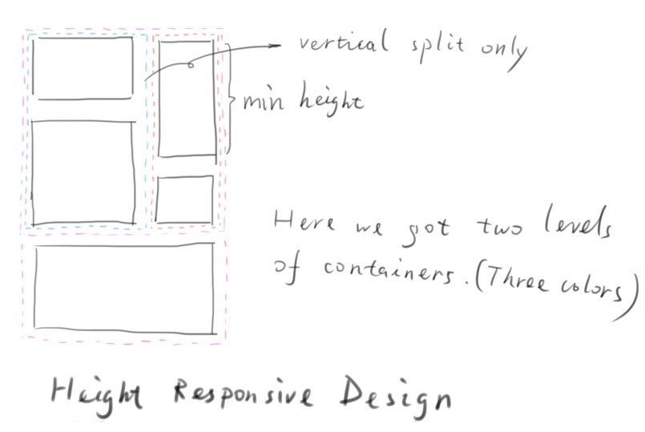

An application to abstract and visualize the edit procedure of common webpages. Combine the two words Page and Editor, I create the Peditor | 'peditə |.
Install dependencies:
npm install
Launch:
npm start
Auto test:
npm test
Debug:
npm run-script debug
Agile.
Here I should introduce a new web app architecture that I created, MSV. The design pattern on the editor is Command Pattern.
A visual editable grid editor. Easily split the page into containers.
Common widgets:
Widget editor.
History control, this will be implement in future.
Save and load manager.
Mainly a file format for saving the edit's states is enough. I call the format Page Document, file extension '.pdoc'. It saves the edit commands and page resources.
The CouchDB is good enough, it has already covered most the requirements with its build-in functions.